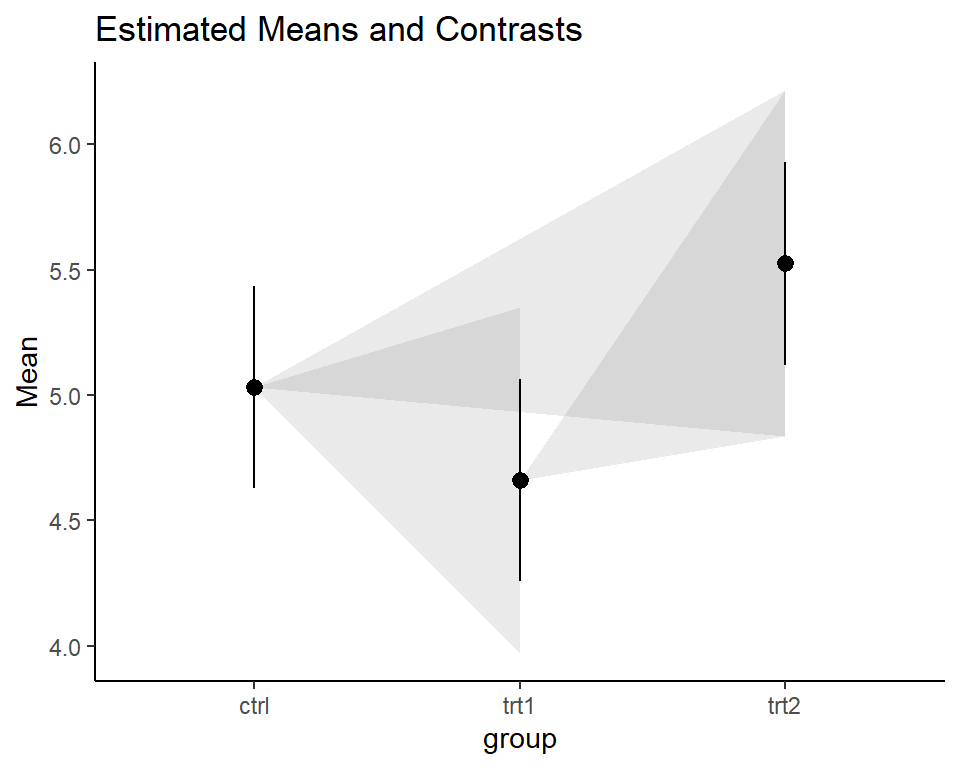

Compact Letter Display (CLD)
What is it?
Compact letter displays are often used to report results of all pairwise comparisons among treatment means in comparative experiments. See Piepho (2018) for more details and scroll down for a coding example.
| Group | Mean weight* |
|---|---|
| Trt1 | 4.7a |
| Ctrl | 5.0ab |
| Trt2 | 5.5b |
*Means not sharing any letter are significantly different by the Tukey-test at the 5% level of significance.
How to
get the letters
You will need to install the packages {emmeans}, {multcomp} and {multcompView}. The example given here is based on the PlantGrowth data, which is included in R.
library(emmeans)
library(multcomp)
library(multcompView)
# set up model
model <- lm(weight ~ group, data = PlantGrowth)
# get weight means per group
model_means <- emmeans(object = model,
pairwise ~ "group",
adjust = "tukey")
# add letters to each mean
model_means_cld <- cld(object = model_means$emmeans,
Letters = letters,
alpha = 0.05)
# show output
model_means_cld## group emmean SE df lower.CL upper.CL .group
## trt1 4.66 0.197 27 4.26 5.07 a
## ctrl 5.03 0.197 27 4.63 5.44 ab
## trt2 5.53 0.197 27 5.12 5.93 b
##
## Confidence level used: 0.95
## P value adjustment: tukey method for comparing a family of 3 estimates
## significance level used: alpha = 0.05
## NOTE: Compact letter displays can be misleading
## because they show NON-findings rather than findings.
## Consider using 'pairs()', 'pwpp()', or 'pwpm()' instead.As you can see,
- We set up a model using
lm()- This is a very simple example. You may use much more complex models and many other model classes.
emmeans()estimates means per group- It allows for different multiplicity adjustments. Go to the “P-value adjustments” heading within the “summary.emmGrid” section in the emmeans documentation for more details on e.g. t-test, Tukey-test, Bonferroni adjustment etc.
cld()adds the letters in a new column named.group.- The
alpha =argument lets you choose the significance level for the comparisons.
- The
interpret the letters
By default, the NOTE: seen in the output above warns of how the CLD can be misleading. The author and maintainer of the {emmeans} package, Russell V. Lenth makes the argument that CLDs convey information in a way that may be misleading to the reader. This is because they “display non-findings rather than findings - they group together means based on NOT being able to show they are different” (personal communication). Furthermore, “[the CLD approach] works, but it is very black-and-white: with alpha = .05, P values slightly above or below .05 make a difference, but there’s no difference between a P value of .051 and one of .987, or between .049 and .00001” (posted here). Furthermore, the NOTE: suggests using alternative plots, which are also created below.
On the other hand, it must be clear that the information conveyed by CLDs is not wrong as long as it is interpreted correctly. The documentation of the cld() function refers to Piepho (2004), but even more on point in this context is
Piepho, Hans-Peter (2018) Letters in Mean Comparisons: What They Do and Don’t Mean,
Agronomy Journal, 110(2), 431-434. DOI: 10.2134/agronj2017.10.0580 (ResearchGate)
Abstract
- Letter displays allow efficient reporting of pairwise treatment comparisons.
- It is important to correctly convey the meaning of letters in captions to tables and graphs displaying treatment means.
- The meaning of a letter display can and should be stated in a single sentence without ambiguity.
Letter displays are often used to report results of all pairwise comparisons among treatment means in comparative experiments. In captions to tables and charts using such letter displays, it is crucial to explain properly what the letters mean. In this paper I explain what the letters mean and how this meaning can be succinctly conveyed in a single sentence without ambiguity. This is contrasted to counter-examples commonly found in publications.
Thus, the Piepho (2018) article (= 4 pages long) is certainly worth a read if you are using CLDs.
get the plots
Here I provide code for two ways of plotting the results via {ggplot2}. The first plot is the one I would use, while the second plot is one that is traditionally more common. Finally, I provide examples of other plots that I came across that are suggested as alternatives to CLD plots.
The code for creating the plots is hidden by default - you need to click on the CODE button on the right to see it.
plot 1: suggested
I’ve been using and suggesting to use this type of plot for a while now. I know it contains a lot of information and may seem unfamiliar and overwhelming at first glance. However, I argue that if you take the time to understand what you are looking at, this plot is nice as it shows the raw data (black dots), descriptive statistics (black boxes), estimated means (red dots) and a measure of their precision (red error bars) as well as the compact letter display (red letters).
library(tidyverse) # ggplot & helper functions
library(scales) # more helper functions
# optional: sort factor levels of groups column according to highest mean
# ...in means table
model_means_cld <- model_means_cld %>%
mutate(group = fct_reorder(group, emmean))
# ...in data table
PlantGrowth <- PlantGrowth %>%
mutate(group = fct_relevel(group, levels(model_means_cld$group)))
# base plot setup
ggplot() +
# y-axis
scale_y_continuous(
name = "Weight",
limits = c(0, NA),
breaks = pretty_breaks(),
expand = expansion(mult = c(0,0.1))
) +
# x-axis
scale_x_discrete(
name = "Treatment"
) +
# general layout
theme_classic() +
# black data points
geom_point(
data = PlantGrowth,
aes(y = weight, x = group),
shape = 16,
alpha = 0.5,
position = position_nudge(x = -0.2)
) +
# black boxplot
geom_boxplot(
data = PlantGrowth,
aes(y = weight, x = group),
width = 0.05,
outlier.shape = NA,
position = position_nudge(x = -0.1)
) +
# red mean value
geom_point(
data = model_means_cld,
aes(y = emmean, x = group),
size = 2,
color = "red"
) +
# red mean errorbar
geom_errorbar(
data = model_means_cld,
aes(ymin = lower.CL, ymax = upper.CL, x = group),
width = 0.05,
color = "red"
) +
# red letters
geom_text(
data = model_means_cld,
aes(
y = emmean,
x = group,
label = str_trim(.group)
),
position = position_nudge(x = 0.1),
hjust = 0,
color = "red"
) +
# caption
labs(
caption = str_wrap("Black dots represent raw data. Red dots and error bars represent (estimated marginal) means ± 95% confidence interval per group. Means not sharing any letter are significantly different by the Tukey-test at the 5% level of significance.", width = 70)
)
plot 2: well-known
Traditionally, bar plots with error bars are used a lot in this context. In my experience, there is at least one poster with one of them in every university building I. While they are not wrong per se, there is a decade-long discussion about why such “dynamite plots” are not optimal (see e.g. this nice blogpost).
library(tidyverse) # ggplot & helper functions
library(scales) # more helper functions
# optional: sort factor levels of groups column according to highest mean
# ...in means table
model_means_cld <- model_means_cld %>%
mutate(group = fct_reorder(group, emmean))
# ...in data table
PlantGrowth <- PlantGrowth %>%
mutate(group = fct_relevel(group, levels(model_means_cld$group)))
# base plot setup
ggplot() +
# y-axis
scale_y_continuous(
name = "Weight",
limits = c(0, NA),
breaks = pretty_breaks(),
expand = expansion(mult = c(0,0.1))
) +
# x-axis
scale_x_discrete(
name = "Treatment"
) +
# general layout
theme_classic() +
# bars
geom_bar(data = model_means_cld,
aes(y = emmean, x = group),
stat = "identity") +
# errorbars
geom_errorbar(data = model_means_cld,
aes(
ymin = emmean - SE,
ymax = emmean + SE,
x = group
),
width = 0.1) +
# letters
geom_text(
data = model_means_cld,
aes(
y = emmean + SE,
x = group,
label = str_trim(.group)
),
hjust = 0.5,
vjust = -0.5
) +
# caption
labs(
caption = str_wrap("Bars with errorbars represent (estimated marginal) means ± standard error. Means not sharing any letter are significantly different by the Tukey-test at the 5% level of significance.", width = 70)
)alt 1: Pairwise P-value plot
This is the Pairwise P-value plot suggested in the NOTE we received above as an alternative. The documentation reads: Factor levels (or combinations thereof) are plotted on the vertical scale, and P values are plotted on the horizontal scale. Each P value is plotted twice – at vertical positions corresponding to the levels being compared – and connected by a line segment. Thus, it is easy to visualize which P values are small and large, and which levels are compared.
pwpp(model_means$emmeans) + theme_bw()alt 2: Lighthouse plot {easystats}
Within the framework of the {easystats} packages, the lighthouse plots came up as a more recent idea. See this issue and this and this part of the documentation for more details.
library(modelbased)
library(see)
plot(estimate_contrasts(model, adjust = "tukey"),
estimate_means(model)) +
theme_classic()alt 3: The {ggbetweenstats} plot
Finally, the {ggstatsplot} package’s function ggbetweenstats() aims to create graphics with details from statistical tests included in the information-rich plots themselves and would compare our groups like this:
library(ggstatsplot)
# "since the confidence intervals for the effect sizes are computed using
# bootstrapping, important to set a seed for reproducibility"
set.seed(42)
ggstatsplot::ggbetweenstats(
data = PlantGrowth,
x = group,
y = weight,
pairwise.comparisons = TRUE,
pairwise.display = "all",
p.adjust.method = "none"
)
Please feel free to contact me about any of this!
schmidtpaul1989@outlook.com